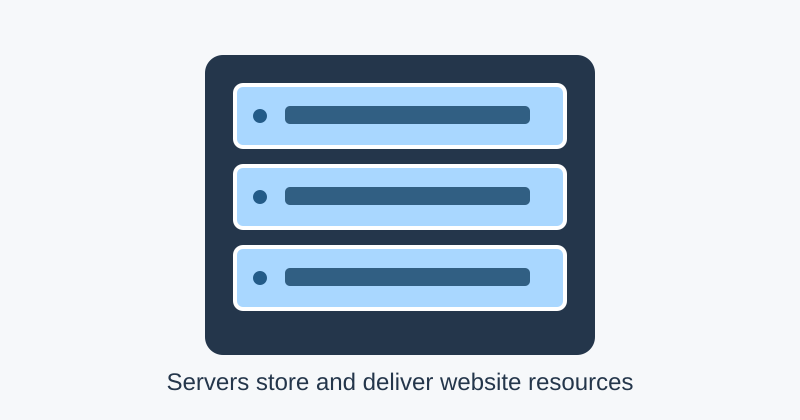

1. What Is the Internet?
The internet is a worldwide network that connects computers, phones, servers, and many other devices. It allows people to communicate, learn, share files, watch videos, and use online services. The internet is often called a network of networks because it links many smaller networks together using common technical rules known as protocols.
The internet is not one giant computer. It relies on physical and wireless connections, including fibre-optic cables, Wi-Fi, mobile networks, routers, data centres, and cables under the sea. At home, a device usually connects to a Wi-Fi router, which connects to an internet service provider. That provider helps carry data towards other networks and the destination.

2. How Does Data Travel?
Imagine entering a website address into a browser. Your browser prepares a request for the website's server. The request travels across networks, passing through devices called routers. Routers examine addressing information and forward data towards its destination. Information is commonly divided into small units called packets, which can travel through networks before being reassembled at the destination.
The server receives the request and sends back the resources needed to display the page, such as HTML documents and images. Your browser reads the HTML and displays the content. This exchange is often completed in less than a second, though the time depends on the network, server, and size of the page.
A simple website visit
- Enter a website address in your browser.
- The browser looks up the website's network address.
- Your device sends a request through the network.
- The server returns the requested page resources.
- The browser displays the webpage.
The World Wide Web is one service that uses the internet. Email, online gaming, video calls, and file transfers also use internet connections, even though they are not all the same service.
3. IP Addresses and DNS
Devices use Internet Protocol (IP) addresses to help identify where data should be delivered. IPv4 addresses are written as four numbers separated by dots. IPv6 addresses use groups of hexadecimal characters separated by colons and provide a much larger address space.
People find names easier to remember than numbers. The Domain Name System (DNS) helps translate a domain name, such as a website's name, into the IP address that computers can use to contact the server. A DNS resolver looks up the relevant record, and the browser can then send its request to the destination.
Useful terms
| Term | Meaning |
|---|---|
| Router | Forwards data between networks. |
| Server | Receives requests and provides resources or services. |
| Packet | A small unit of data sent across a network. |
| DNS | Looks up domain names to find network addresses. |
To explore these ideas further, visit the Cloudflare guide to the internet. You can also read about the Internet Society's explanation of the internet.
4. Staying Safe Online
The internet makes information and communication widely available, but using it safely is important. Create strong, unique passwords and turn on multi-factor authentication when possible. Check a website's address carefully before entering personal information. Be cautious about unexpected messages, links, and attachments, because some are designed to trick people.
- Use different passwords for important accounts.
- Keep your browser and operating system updated.
- Check information against reliable sources.
- Think before sharing personal details or photos.
- Use HTTPS websites when sending sensitive information, while remembering that HTTPS alone does not prove a site is honest.
Learning how networks work can also help us understand why privacy, security updates, and responsible online behaviour matter. For a practical introduction to online safety, read Stay Safe Online.
Conclusion
The internet connects networks around the world so devices can exchange information. Routers forward packets, IP addresses help data reach the right destination, DNS connects familiar domain names with network addresses, and servers respond to requests from browsers. These steps happen so quickly that opening a website can feel almost instant. Understanding the basics makes the technology less mysterious and helps us use it thoughtfully. As the internet continues to develop, knowing how it works—and how to stay safe while using it—is a useful skill for every student.